SAVANAH Tutorial
A thorough introduction to the features of 'Sample management and visual analysis of high-throughput screens - SAVANAH'
Note: Screenshots and the tutorial were created by MLP. The SAVANAH logo was created by ML.
Table of Contents
Step 2 : Adding sample information and creating plate layouts manually
Number of cells or cell material
Creating a plate layout manually
Creating a plate object manually
Step 3 : Uploading a screening library.
Step 4 : Creating library dilutions for assay plates
Step 5 and 6 : Creating projects and new experiments
Step 7 : Readout files in ZIP-format
Step 8 : Visualizing the readouts
Step 9 : Exporting information to R
Step 10 : Bug reporting and Final Remarks
Go to http://130.225.157.237:8080/SAVANAH/ (05/04/2016) and login with username 'demo' and the password 'demo0815'.
Welcome to SAVANAH!
On the front page you can find 10 steps to use SAVANAH for your high-throughput screen. By clicking each number, the user can easily navigate through the various steps in creating plates and libraries. Once completed, the user may get back to the 10-step list by clicking the SAVANAH banner in the top of the page. This guide will take you through each of the 10 steps providing examples and highlighting features of each.
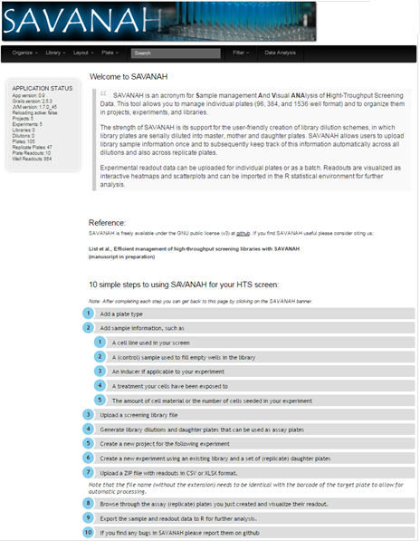
Before entering any libraries or experiments in SAVANAH the user must ensure that the plate type used is to be found in the web-application. Either, click on the first of the 10 steps, or click on 'Plate' in the black bar and select 'Plate Types' from the drop down menu. In the right corner select New PlateType. Select the shape of the well from the drop down menu and type in a name for the well type as well as a vendor. Furthermore, it can be selected if the plate is an Ultra Low Adhesion.
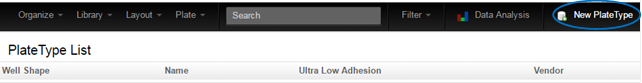
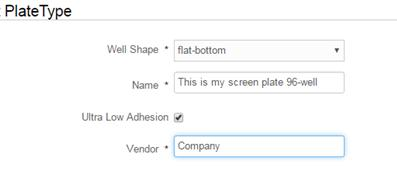
After adding the needed plate types, information for each sample needs to be entered. These properties should be prepared before creating plate layouts manually and before moving to step 4. By clicking 'Layout' and selecting from the drop down menu properties such as Cell lines, inducers, number of cells seeded, treatments and samples can be accessed. Alternatively, the corresponding numbers under step 2 of the 10-step guide can be pressed to access the individual properties.
As an example, select Layout>'CellLines'. Annotated cell lines used in prior experiments will be displayed.
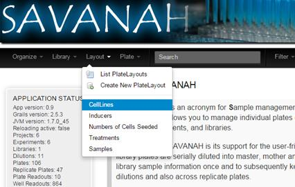
Select 'New Cell line' (circle) in the top right corner to annotate further cell lines. Choose a name and a color for displaying the property. Click 'Create' in the bottom left corner.
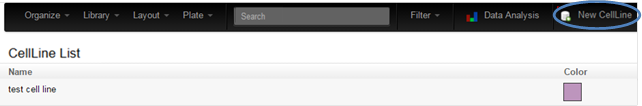'
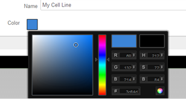
As a second example samples may be added to each plate. While for high-throughput screens the sample names may be uploaded automatically (see section 4) it may for smaller screens be advantageous to upload samples manually. Furthermore, for HTS-libraries, control samples must often be added to daughter screening plates after creation (see section 5).
To create samples for annotation, select Layout>'Samples' and press 'New Sample' (blue circle). Specify the sample name, -type and 'target if known. Furthermore, select if the sample is a control, and if so, which kind. Last, select a color as identifier and click 'Create' in the bottom left corner.
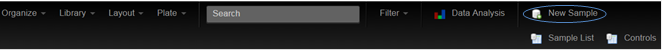
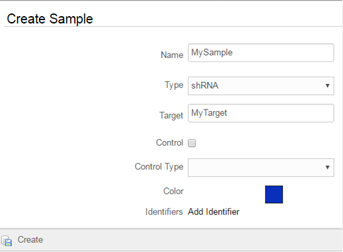
Next, inducers and/or treatments may be added in a similar fashion as samples and cell lines. These may be added to experiments to facilitate a certain phenotype. As described above, select Layout>'Inducers'/'Treatments' and press 'New '' in the right corner. Enter the name and concentration for inducers and/or treatments and give them colours. Click 'Create' in the bottom left corner.
Last, specify the number of seeded cells for the experiment, or the final obtained cell material if this is more applicable. Select Layout>'Number of Cells Seeded' and click 'New Number of cells seeded' in the right corner. Enter the name and give the property a color as identifier. Press 'Create' in the bottom left corner.
Basically, all the mentioned properties which are needed should be filled in before creating a plate layout manually (explained below) or before creating an experiment from a library (explained in step 5+6).
To manually create an experimental plate layout select Layout>'Create New PlateLayout'. Enter the name of the plate, the format and which experiment the plate belongs to. Click 'Create' in the bottom left corner.
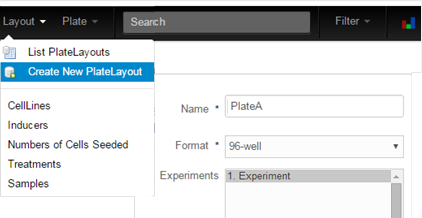
Next, you will see a schematically displayed plate. Please use the drop-down property menu to select and assign the different properties of your plate, which were created previously in step 2. Select a property (e.g. sample) in drop down menu (1). Next, select a sample attribute in the field on the left, and click in the wells which contain this particular sample. Alternatively if several wells contain the same attribute, draw a box with the mouse that covers the respective wells. The colour code will reflect the loading of your plate and if a well is mistakenly loaded this can be removed by selecting 'None' in the attributes list and clicking on the well-in-question. After filling in one property, make sure to save your work (2) and move on to the next property. If needed, it is possible to create copies of plate layouts. This is useful in scenarios where only few properties change from experiment to experiment, such as number of cells seeded or cell line. Give the copy a proper name before pressing 'Create Copy of this layout' (3). NB: It should be emphasized that you will now be working on the copy unless switched back to the original plate! Now change the desired properties (1), which differ between the original and the copy layout and save your changes (2).
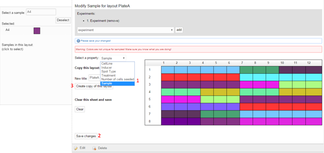
You can list all created layouts by experimental plate(s) clicking Layout>'List PlateLayouts'.
Opposed to the plate layouts, the plate objects hold information on the physical properties of the plate such as type or barcode, but readout measurements may also be uploaded here. Again, if a screening library is used (as in Step 4-6) this will be prepared automatically.
MORE
High-throughput screens often consist of hundreds to thousands of molecules combined in a library. To avoid creating all plate layouts manually and to efficiently manage sample information and well locations in each plate of the library, these must be added to the system. To this end, SAVANAH accepts tab separated files provided they have a specific header (Supplementary table xx). SAVANAH will check for and avoid duplicate entries by comparing to previously existing sample names and accession numbers. To upload a library press Library>'Create New Library', or press number 3 on the front page.
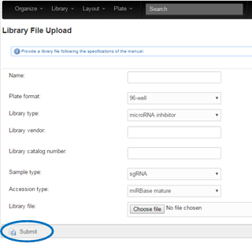
Type in information on the library content, catalogue number, sample- and accession types and press 'Submit' (blue circle).
The library can then next be used for generation of serially diluted master-, mother- and daughter plates. To do so, either press number 4 from the main page or select Library>'Library Dilutions' and open the folder of the desired library. To the right, a panel for creating library dilutions will appear. Enter how many plates you want in the dilution and specify the barcode to be applied. The %L%, %MA%, %MO%, %DA% refers to the index of the library-, master-, mother-, and daughter plates, respectively. Press 'Create' between each set of plates (blue circle), and selected them from the tree structure to the right to create the next level of diluted plates.
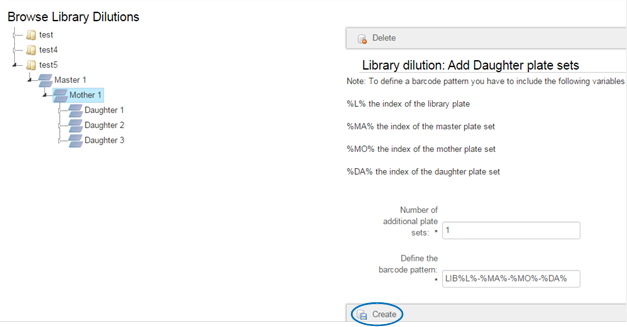
Next, experiments are to be created and organized into projects. In the black drop-down menu, select Organize>'Create New Project' or press 5 from the main page. Then click 'Create' in the bottom left corner to create the project.
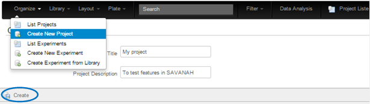
Next, several experiments can be added to each created project. This can be done manually (described first) or from the previously entered screening library. Select number 6 on the front page or chose Organize>'Create New Experiment' from the drop down menu. Fill in information about the experiment and select the project from the drop-down menu where the experiment belongs. 'Press 'Create' in the bottom left corner to save changes. Projects and experiments may later be sorted using the 'Filter' (blue arrow).
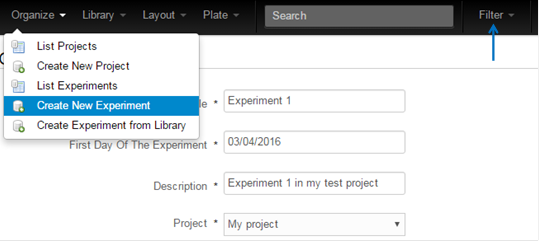
Alternative to creating an experiment manually, the option 'Create Experiment from Library' may be selected. Here, the same information is entered however also including a previously created library of plates. After continuing, the user is asked to select which 'Daughter'-plate, which have not previously been assigned to an experiment, are to be used. By selecting several daughter-plates, these will serve as replicates.

Next, default settings which apply to the entire screen are to be selected. These properties, such as cell lines, number of cell seeded, inducers and treatment, should be prepared in advance as described in section 2. Prepare all the properties needed and enter them in the in the appropriate experiment.
The user can then specify which control samples are to be placed in empty wells. Often, libraries are constructed to contain empty rows where users may enter controls on an ad hoc basis. The samples can be placed simply by clicking the respective wells. Note; if a well already contains a sample, the control sample will be ignored.'
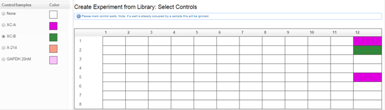
After clicking 'Create Experiment' in the lower left corner, a second message will ask for confirmation of the information for this particular experiment.
In step 7 it is possible to upload plate readouts such as e.g. cell viability in a ZIP-file format. Either access this by clicking step 7 on the front page, or click Plate>'Batch import readout data from zip file' from the drop down menu.
For the ZIP-upload to work, all readout files must match the barcodes applied when creating the library dilution in step 4. In this way the readouts will automatically be added to the corresponding plates in SAVANAH. Furthermore, successive names for the experimental plates are required. The file types accepted by SAVANAH are; .xlsx, .csv, and tab separated .txt formats. Requirements for the file style can be seen in suppl xxxx. Fill in the information about the readout and select the corresponding ZIP-file. Click 'Upload zip file' in the lower left corner.
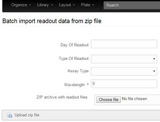
Next, check the box indicating if any columns in the readout files are to be skipped and how many columns are the minimum to be read. Press 'Read header from first file' (blue arrow). Select Well (e.g. in the format of 'A01' etc.) from the drop down menu to specify the column of your readout file which holds information on well position. The characters 'Plate' and 'Readout' can be selected if your readout file contains information on the plate number and replicate number. 'Type' and 'Time' can be applied for the assay type and readout time, if this information is available in the readout file. The 'CellTiter Blue 560/590 nm (Counts)' appears based on the previously selected assay type and corresponds to the readout signal called measuredValue in the readout file. Match all columns needed to the columns of the result file using the drop-down menu. Press 'Import readout files' (dark blue arrow).
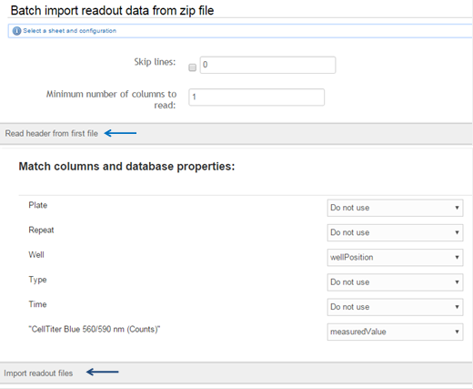
Subsequently, the readout data is displayed in a heatmap or scatter plot for visual inspection.
To visualize the readouts added to the individual plates press number 8 on the front page. Alternatively, select the plate of interest under Plate>'List Plates'. Press the panel saying 'Readouts' to visualize the associated signal.
MORE
One final feature of SAVANAH allows the user to export the plates with all their information and associated readouts to R for further analysis. Plates may be filtered by project, experiments or specific layouts. Plates which the user wants to export to R may be selected by click + SHIFT/CTRL. Press the 'Export selected plate information and associated readout data to R'-button in the left corner. Copy the code given into R to start our own individual work on the data!
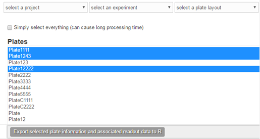
Last, by clicking on step 10 on the front page, the user will be taken to the SAVANAH bug tracker where malfunctions and requests may be reported https://github.com/NanoCAN/SAVANAH/issues (05/04/2016). We intend to continue the developing SVANAH to make it the optimal tool for HTS management and readout processing. Thus, in case of questions and comments on improvements, please go to the project wiki page https://github.com/NanoCAN/MIRACLE/wiki (31/03/2014).